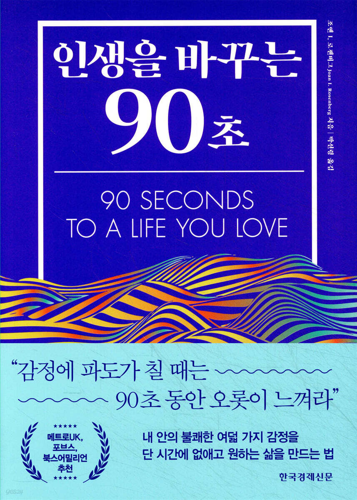

인생을 바꾸는 90초 - 조앤 I. 로젠버그
2026-04-04

근래에 책을 많이 읽는다. 한 주에 한두 권은 꼭 읽으려 하고, 읽은 것은 기록으로 남기려 한다. 박사과정 중에 성숙한 연구자이자 지성인이자 조금 더 나은 내가 되고 싶기 때문이다. 그러다 이 책을 보게 되었다.
한국어 제목은 '인생을 바꾸는 90초'지만, 나는 영어 제목인 90 Seconds to a Life You Love가 더 마음에 들었다. 단순히 인생을 바꾸는 시간이 아니라, 내가 사랑하는 삶 쪽으로 방향을 틀게 하는 90초처럼 들렸기 때문이다.
가장 먼저 남은 것은 감정을 좋다, 싫다, 나쁘다, 당황스럽다, 기쁘다 같은 몇 개의 단어로 납작하게 처리하지 말아야 한다는 점이다. 물론 그런 단순화가 빠르고 사회적으로 편리하며 실용적인 지점도 있다. 하지만 실제 인간 경험을 담기에는 여전히 너무 거칠다.
우리는 몇 개의 감정 태그만으로 정의될 수 있는 존재가 아니다. 이 책은 감정의 표면 아래에 있는 더 깊은 구조를 생각하게 만들었다. 그리고 의외로 감정을 정면으로 마주했을 때 속이 더 상쾌했고, 더 편안했고, 오히려 기분이 더 좋아지는 경험도 남았다.
불쾌한 생각과 감정은 우리를 거북하게 하고 때로는 실제 고통까지 안기기 때문에 대부분 피하려 한다. 책은 여기서 자주 나타나는 패턴을 '경험적 회피'라고 부른다. 주의를 다른 데로 돌리며 눈앞의 문제를 비켜가는 습관이다. 하지만 힘든 감정을 계속 피하면 자기 삶을 보호하거나 개선하는 데 도움이 되는 감정적 정보까지 함께 차단하게 된다.
문제는 회피가 고통을 잠시 늦추는 데서 끝나지 않는다는 점이다. 많은 사람은 불쾌한 감정을 건전하게 견디고 관리하는 법을 제대로 배우지 못한 채, 오히려 그 반대 행동을 먼저 익힌다. 세상은 집중을 흐트러뜨리는 일과 감정을 손쉽게 무디게 만드는 수단으로 가득하다. 아이들조차 정크푸드, 전자제품, 술 같은 즉각적 기분전환 수단을 통해 불쾌한 감정을 피하는 법을 배우기 쉽고, 그것은 나중에 더 큰 문제를 만들 수도 있다.
사람들은 배우자, 받아들이거나 거절한 직업, 참석했거나 가지 않은 파티, 지원한 대학 같은 큰 선택이 행복을 좌우한다고 생각한다. 그런 결정들이 기회에 영향을 미치는 것은 사실이다. 하지만 책은 전반적인 행복과 내적 평화, 일상의 안녕을 더 크게 좌우하는 것은 평소의 태도와 반복되는 상황에 접근하는 방식이라고 말한다.
정말 중요한 것은 짧은 시간 조각에서 벌어지는 일들이다. 동료가 빈정대는 말을 했을 때 나는 제대로 항의했는가. 마감이 코앞이라 힘들 때 배우자나 자녀에게 어떤 식으로 말했는가. 그 짧은 순간이 하루 종일, 혹은 일주일 내내 나를 따라다녔는가. 책은 이런 짧은 감정의 순간들로 시선을 계속 돌린다. 삶의 실제 질감은 바로 그곳에서 쌓이기 때문이다.
순간순간의 경험을 인식하면 생각, 감정, 욕구, 지각, 신체 감각, 욕망, 기억, 믿음, 의도 같은 더 넓은 내면 정보를 알아차릴 수 있다. 그 모든 것이 자기 이해를 더 깊게 만든다. 감정 인식은 단순히 감정 이름을 붙이는 일이 아니라, 그 감정을 둘러싼 구조를 따라가는 일에 가깝다.
이 과정은 감정의 우회도 드러낸다. 어떤 순간에는 슬픔과 실망을 피하기 위해 분노와 비아냥으로 방향을 틀었다는 사실을 뒤늦게 깨닫게 된다. 겉으로는 하나의 감정처럼 보이지만, 실제로는 그 아래의 더 취약한 감정을 가리는 방패일 수 있다는 뜻이다.
가장 운 좋은 사람은 정서적 따뜻함과 감정 조절 능력, 그리고 사려 깊은 추론 능력을 갖춘 부모 밑에서 자란 사람들이다. 반대로 부모가 자기 고통을 이해하지 못하거나 극복하지 못하면, 그 고통은 혼란, 분노 발작, 무시, 거리두기, 완전한 차단 같은 형태로 가족 안에 흘러들기 쉽다.
관심을 주지 않는 부모 밑에서는 아이 역시 자기 감정을 차단하는 법을 배우기 쉽다. 부모가 분노를 잘못 다루는 모습을 반복해서 보았거나, 아이 자신이 그 격렬한 분노의 표적이 되었을 때도 마찬가지다. 위험을 통제할 수 없는 상황에서는 자신의 분노뿐 아니라 무력감까지 제쳐두는 일이 생존 전략처럼 자리 잡을 수 있다.
책은 불안과 걱정을 표현하는 말이 생각보다 훨씬 많다는 사실도 상기시킨다. 걱정스럽다, 신경쓰인다, 겁난다, 초조하다, 불안하다, 무섭다, 뒤숭숭하다, 공황상태다, 스트레스를 받는다, 압박을 느낀다, 괴롭다, 겁먹었다, 우려된다, 껄끄럽다, 힘들다, 신경이 날카롭다, 떨린다, 걱정된다, 끔찍하다, 조마조마하다, 안절부절못한다, 이성을 잃었다, 불안정하다, 안달한다, 속상하다, 기겁했다, 마음을 졸인다, 낭패다, 대경실색했다, 충격을 받았다, 동요했다, 겁이 많다, 긴장했다.
이 말들의 중요성은 단순한 어휘 확장에만 있지 않다. 삶을 바라보는 사고방식이 긍정적이고 낙관적이며 수용적인가, 아니면 부정적이고 비관적이며 냉소적인가에 따라 몸이 받는 영향도 달라진다는 뜻이기 때문이다. 차분함과 만족을 주는 생각인지, 분노와 실망과 불안을 안겨주는 생각인지도 중요하다. 책은 모든 생각이 신체에 광범위한 영향을 미친다고 말한다.
그래서 중요한 일 중 하나는 선택 감각을 최대한 넓히는 것이다. 내가 무엇을 느끼는지와 어떻게 반응하는지 사이의 공간을 늘리고, 무엇을 보고 어떻게 해석하고 어떻게 대응할지 더 의식적으로 다루는 일이다. 이것은 저절로 되지 않는다. 의식하고, 연습하고, 반복해서 생각해야 비로소 몸에 깃든다.
또 하나 남은 것은 남들이 생각만큼 나에게 큰 관심이 없다는 사실을 인지해야 한다는 점이다. 물론 어릴 때는 다르다. 관찰과 피드백과 타인과의 관계가 있어야 발전할 수 있고, 관계의 성격은 뇌 구조의 발달 방식과 두뇌 프로세스의 효율성에도 영향을 미친다. 어린 시절에는 실제로 타인의 반응이 많이 필요하다.
하지만 다른 사람의 견해에 지나치게 의존하면 자신을 표현할 수 있는 신뢰와 자신감, 자기 자신과의 친숙함이 제대로 자라지 못한다. 그래서 성인이 되면 피드백 의존도를 크게 줄이는 일이 중요하다. 신경과학은 우리가 왜 타인이 자기를 어떻게 생각하는지에 그렇게 민감한지도 부분적으로 설명한다. 우리는 안전과 위험, 생명의 위협 때문에 늘 다른 사람과 주변 환경을 살피도록 만들어져 있다. 그러니 그 불안은 이해할 만하다. 다만 이해된다고 해서 계속 그 지배 아래 살아야 하는 것은 아니다.
실천 항목으로 가장 선명하게 남은 것은 이른바 로젠버그 리셋이었다. 형태는 단순하지만, 실제로는 쉽지 않은 훈련이다.
또 하나 기억에 남은 연습은 남들과 공유하기가 꺼려지는 생각이 무엇인지 깨닫는 것이다. 비유는 노래다. 말을 하지 않으면 헤드폰을 쓴 채 혼자만 그 노래를 듣는 것과 같다. 생각의 노래를 정말 공유하고 싶다면 스피커를 연결해서 볼륨을 높이고, 다른 사람도 들을 수 있게 해야 한다.
비탄에 관한 문장은 진짜 문장만이 가질 수 있는 방식으로 엄격했다. 비탄을 제대로 극복하려면, 이미 한 일은 결코 되돌릴 수 없고, 과거에 하지 않은 일은 이제 와서 할 수 없다는 사실을 받아들여야 한다는 것이다. 여기서 받아들임은 체념이 아니라 환상이 멈추고 현실이 들어오는 지점처럼 읽혔다.
별점으로 줄이면 이 책은 내게 5점 만점에 4점 정도다. 가장 좋았던 것은 어떤 화려한 기술이 아니라, 감정을 더 정밀하게 마주하라고 요구하는 태도였다. 몇 개의 단어로 납작하게 처리하거나 곧바로 회피하는 대신, 90초 동안 머물며 신체 감각의 파도를 통과하고, 선택 감각을 넓히며, 조금 더 정직하게 살아보라고 말하는 점이 실질적이면서도 깊게 남았다. 다만 뒤로 갈수록 조금 지치기도 했다. 감정을 들여다보고 반복해서 학습하는 구조가 계속 이어져서 후반부에는 약간의 피로감도 있었다. 그래도 핵심 제안 자체는 충분히 실용적이고 조용히 깊었다.